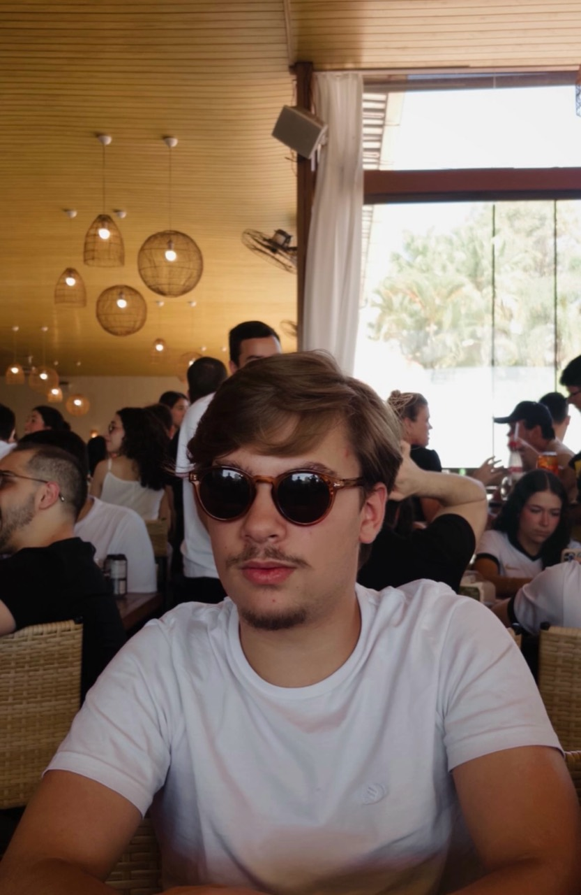

Desenvolvimento web
HTML, CSS e JavaScript para interfaces responsivas e funcionais.
Olá, eu sou
Gosto de transformar ideias em projetos reais, aprender coisas novas e resolver problemas com tecnologia.

01 / QUEM SOU
Sou o Luiz, estudante do COTEMIG e atualmente estagiário de TI na MCSA. Gosto de entender como as coisas funcionam, resolver problemas e colocar a mão na massa.
Tenho interesse em desenvolvimento de software, banco de dados e nas possibilidades que a tecnologia abre. Cada projeto é uma chance de aprender algo novo.
02 / O QUE ESTUDO
Algumas das ferramentas que fazem parte da minha jornada.
HTML, CSS e JavaScript para interfaces responsivas e funcionais.
Estudos e projetos com C#, Java e Python.
Interesse em SQL, modelagem e organização de dados.
Experiência prática em atendimento e solução de problemas.
03 / NA PRÁTICA
Um projeto para explorar criação de páginas, organização visual e desenvolvimento web.
Uma forma de praticar estruturação e apresentação de informações usando a web.
Um registro dos primeiros passos na programação e da evolução ao criar algo próprio.
04 / CONTATO
Para trocar uma ideia sobre tecnologia, projetos ou oportunidades, é só mandar uma mensagem.
luizguilhermemcaldeira@gmail.com ↗